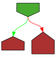

// Copyright 2010 The Go Authors. All rights reserved.
// Use of this source code is governed by a BSD-style
// license that can be found in the LICENSE file.
// Package json implements encoding and decoding of JSON as defined in
// RFC 7159. The mapping between JSON and Go values is described
// in the documentation for the Marshal and Unmarshal functions.
//
// See "JSON and Go" for an introduction to this package:
// https://golang.org/doc/articles/json_and_go.html
package json
import (
"bytes"
"encoding"
"encoding/base64"
"fmt"
"math"
"reflect"
"sort"
"strconv"
"strings"
"sync"
"unicode"
"unicode/utf8"
)
// Marshal returns the JSON encoding of v.
//
// Marshal traverses the value v recursively.
// If an encountered value implements the Marshaler interface
// and is not a nil pointer, Marshal calls its MarshalJSON method
// to produce JSON. If no MarshalJSON method is present but the
// value implements encoding.TextMarshaler instead, Marshal calls
// its MarshalText method and encodes the result as a JSON string.
// The nil pointer exception is not strictly necessary
// but mimics a similar, necessary exception in the behavior of
// UnmarshalJSON.
//
// Otherwise, Marshal uses the following type-dependent default encodings:
//
// Boolean values encode as JSON booleans.
//
// Floating point, integer, and Number values encode as JSON numbers.
//
// String values encode as JSON strings coerced to valid UTF-8,
// replacing invalid bytes with the Unicode replacement rune.
// So that the JSON will be safe to embed inside HTML <script> tags,
// the string is encoded using HTMLEscape,
// which replaces "<", ">", "&", U+2028, and U+2029 are escaped
// to "\u003c","\u003e", "\u0026", "\u2028", and "\u2029".
// This replacement can be disabled when using an Encoder,
// by calling SetEscapeHTML(false).
//
// Array and slice values encode as JSON arrays, except that
// []byte encodes as a base64-encoded string, and a nil slice
// encodes as the null JSON value.
//
// Struct values encode as JSON objects.
// Each exported struct field becomes a member of the object, using the
// field name as the object key, unless the field is omitted for one of the
// reasons given below.
//
// The encoding of each struct field can be customized by the format string
// stored under the "json" key in the struct field's tag.
// The format string gives the name of the field, possibly followed by a
// comma-separated list of options. The name may be empty in order to
// specify options without overriding the default field name.
//
// The "omitempty" option specifies that the field should be omitted
// from the encoding if the field has an empty value, defined as
// false, 0, a nil pointer, a nil interface value, and any empty array,
// slice, map, or string.
//
// As a special case, if the field tag is "-", the field is always omitted.
// Note that a field with name "-" can still be generated using the tag "-,".
//
// Examples of struct field tags and their meanings:
//
// // Field appears in JSON as key "myName".
// Field int `json:"myName"`
//
// // Field appears in JSON as key "myName" and
// // the field is omitted from the object if its value is empty,
// // as defined above.
// Field int `json:"myName,omitempty"`
//
// // Field appears in JSON as key "Field" (the default), but
// // the field is skipped if empty.
// // Note the leading comma.
// Field int `json:",omitempty"`
//
// // Field is ignored by this package.
// Field int `json:"-"`
//
// // Field appears in JSON as key "-".
// Field int `json:"-,"`
//
// The "string" option signals that a field is stored as JSON inside a
// JSON-encoded string. It applies only to fields of string, floating point,
// integer, or boolean types. This extra level of encoding is sometimes used
// when communicating with JavaScript programs:
//
// Int64String int64 `json:",string"`
//
// The key name will be used if it's a non-empty string consisting of
// only Unicode letters, digits, and ASCII punctuation except quotation
// marks, backslash, and comma.
//
// Anonymous struct fields are usually marshaled as if their inner exported fields
// were fields in the outer struct, subject to the usual Go visibility rules amended
// as described in the next paragraph.
// An anonymous struct field with a name given in its JSON tag is treated as
// having that name, rather than being anonymous.
// An anonymous struct field of interface type is treated the same as having
// that type as its name, rather than being anonymous.
//
// The Go visibility rules for struct fields are amended for JSON when
// deciding which field to marshal or unmarshal. If there are
// multiple fields at the same level, and that level is the least
// nested (and would therefore be the nesting level selected by the
// usual Go rules), the following extra rules apply:
//
// 1) Of those fields, if any are JSON-tagged, only tagged fields are considered,
// even if there are multiple untagged fields that would otherwise conflict.
//
// 2) If there is exactly one field (tagged or not according to the first rule), that is selected.
//
// 3) Otherwise there are multiple fields, and all are ignored; no error occurs.
//
// Handling of anonymous struct fields is new in Go 1.1.
// Prior to Go 1.1, anonymous struct fields were ignored. To force ignoring of
// an anonymous struct field in both current and earlier versions, give the field
// a JSON tag of "-".
//
// Map values encode as JSON objects. The map's key type must either be a
// string, an integer type, or implement encoding.TextMarshaler. The map keys
// are sorted and used as JSON object keys by applying the following rules,
// subject to the UTF-8 coercion described for string values above:
// - keys of any string type are used directly
// - encoding.TextMarshalers are marshaled
// - integer keys are converted to strings
//
// Pointer values encode as the value pointed to.
// A nil pointer encodes as the null JSON value.
//
// Interface values encode as the value contained in the interface.
// A nil interface value encodes as the null JSON value.
//
// Channel, complex, and function values cannot be encoded in JSON.
// Attempting to encode such a value causes Marshal to return
// an UnsupportedTypeError.
//
// JSON cannot represent cyclic data structures and Marshal does not
// handle them. Passing cyclic structures to Marshal will result in
// an error.
//
|
|
func Marshal(v any) ([]byte, error) {
e := newEncodeState()
err := e.marshal(v, encOpts{escapeHTML: true})
if err != nil {
return nil, err
}
buf := append([]byte(nil), e.Bytes()...)
encodeStatePool.Put(e)
return buf, nil
}
// MarshalIndent is like Marshal but applies Indent to format the output.
// Each JSON element in the output will begin on a new line beginning with prefix
// followed by one or more copies of indent according to the indentation nesting.
|
|
func MarshalIndent(v any, prefix, indent string) ([]byte, error) {
b, err := Marshal(v)
if err != nil {
return nil, err
}
var buf bytes.Buffer
err = Indent(&buf, b, prefix, indent)
if err != nil {
return nil, err
}
return buf.Bytes(), nil
}
// HTMLEscape appends to dst the JSON-encoded src with <, >, &, U+2028 and U+2029
// characters inside string literals changed to \u003c, \u003e, \u0026, \u2028, \u2029
// so that the JSON will be safe to embed inside HTML <script> tags.
// For historical reasons, web browsers don't honor standard HTML
// escaping within <script> tags, so an alternative JSON encoding must
// be used.
|
|
func HTMLEscape(dst *bytes.Buffer, src []byte) {
// The characters can only appear in string literals,
// so just scan the string one byte at a time.
start := 0
for i, c := range src {
if c == '<' || c == '>' || c == '&' {
if start < i {
dst.Write(src[start:i])
}
dst.WriteString(`\u00`)
dst.WriteByte(hex[c>>4])
dst.WriteByte(hex[c&0xF])
start = i + 1
}
// Convert U+2028 and U+2029 (E2 80 A8 and E2 80 A9).
if c == 0xE2 && i+2 < len(src) && src[i+1] == 0x80 && src[i+2]&^1 == 0xA8 {
if start < i {
dst.Write(src[start:i])
}
dst.WriteString(`\u202`)
dst.WriteByte(hex[src[i+2]&0xF])
start = i + 3
}
}
if start < len(src) {
dst.Write(src[start:])
}
}
// Marshaler is the interface implemented by types that
// can marshal themselves into valid JSON.
type Marshaler interface {
MarshalJSON() ([]byte, error)
}
// An UnsupportedTypeError is returned by Marshal when attempting
// to encode an unsupported value type.
type UnsupportedTypeError struct {
Type reflect.Type
}
|
|
func (e *UnsupportedTypeError) Error() string {
return "json: unsupported type: " + e.Type.String()
}
// An UnsupportedValueError is returned by Marshal when attempting
// to encode an unsupported value.
type UnsupportedValueError struct {
Value reflect.Value
Str string
}
|

|
func (e *UnsupportedValueError) Error() string {
return "json: unsupported value: " + e.Str
}
// Before Go 1.2, an InvalidUTF8Error was returned by Marshal when
// attempting to encode a string value with invalid UTF-8 sequences.
// As of Go 1.2, Marshal instead coerces the string to valid UTF-8 by
// replacing invalid bytes with the Unicode replacement rune U+FFFD.
//
// Deprecated: No longer used; kept for compatibility.
type InvalidUTF8Error struct {
S string // the whole string value that caused the error
}
|
|
func (e *InvalidUTF8Error) Error() string {
return "json: invalid UTF-8 in string: " + strconv.Quote(e.S)
}
// A MarshalerError represents an error from calling a MarshalJSON or MarshalText method.
type MarshalerError struct {
Type reflect.Type
Err error
sourceFunc string
}
|
|
func (e *MarshalerError) Error() string {
srcFunc := e.sourceFunc
if srcFunc == "" {
srcFunc = "MarshalJSON"
}
return "json: error calling " + srcFunc +
" for type " + e.Type.String() +
": " + e.Err.Error()
}
// Unwrap returns the underlying error.
|
|
func (e *MarshalerError) Unwrap() error { return e.Err }
var hex = "0123456789abcdef"
// An encodeState encodes JSON into a bytes.Buffer.
type encodeState struct {
bytes.Buffer // accumulated output
scratch [64]byte
// Keep track of what pointers we've seen in the current recursive call
// path, to avoid cycles that could lead to a stack overflow. Only do
// the relatively expensive map operations if ptrLevel is larger than
// startDetectingCyclesAfter, so that we skip the work if we're within a
// reasonable amount of nested pointers deep.
ptrLevel uint
ptrSeen map[any]struct{}
}
const startDetectingCyclesAfter = 1000
var encodeStatePool sync.Pool
|

|
func newEncodeState() *encodeState {
if v := encodeStatePool.Get(); v != nil {
e := v.(*encodeState)
e.Reset()
if len(e.ptrSeen) > 0 {
panic("ptrEncoder.encode should have emptied ptrSeen via defers")
}
e.ptrLevel = 0
return e
}
return &encodeState{ptrSeen: make(map[any]struct{})}
}
// jsonError is an error wrapper type for internal use only.
// Panics with errors are wrapped in jsonError so that the top-level recover
// can distinguish intentional panics from this package.
type jsonError struct{ error }
|
|
func (e *encodeState) marshal(v any, opts encOpts) (err error) {
|

|
defer func() {
if r := recover(); r != nil {
if je, ok := r.(jsonError); ok {
err = je.error
} else {
panic(r)
}
}
}()
e.reflectValue(reflect.ValueOf(v), opts)
return nil
}
// error aborts the encoding by panicking with err wrapped in jsonError.
|

|
func (e *encodeState) error(err error) {
panic(jsonError{err})
}
|

|
func isEmptyValue(v reflect.Value) bool {
switch v.Kind() {
case reflect.Array, reflect.Map, reflect.Slice, reflect.String:
return v.Len() == 0
case reflect.Bool:
return !v.Bool()
case reflect.Int, reflect.Int8, reflect.Int16, reflect.Int32, reflect.Int64:
return v.Int() == 0
case reflect.Uint, reflect.Uint8, reflect.Uint16, reflect.Uint32, reflect.Uint64, reflect.Uintptr:
return v.Uint() == 0
case reflect.Float32, reflect.Float64:
return v.Float() == 0
case reflect.Interface, reflect.Pointer:
return v.IsNil()
}
return false
}
|
|
func (e *encodeState) reflectValue(v reflect.Value, opts encOpts) {
valueEncoder(v)(e, v, opts)
}
type encOpts struct {
// quoted causes primitive fields to be encoded inside JSON strings.
quoted bool
// escapeHTML causes '<', '>', and '&' to be escaped in JSON strings.
escapeHTML bool
}
type encoderFunc func(e *encodeState, v reflect.Value, opts encOpts)
var encoderCache sync.Map // map[reflect.Type]encoderFunc
|

|
func valueEncoder(v reflect.Value) encoderFunc {
if !v.IsValid() {
return invalidValueEncoder
}
return typeEncoder(v.Type())
}
|
|
func typeEncoder(t reflect.Type) encoderFunc {
if fi, ok := encoderCache.Load(t); ok {
return fi.(encoderFunc)
}
// To deal with recursive types, populate the map with an
// indirect func before we build it. This type waits on the
// real func (f) to be ready and then calls it. This indirect
// func is only used for recursive types.
var (
wg sync.WaitGroup
f encoderFunc
)
wg.Add(1)
|
|
fi, loaded := encoderCache.LoadOrStore(t, encoderFunc(func(e *encodeState, v reflect.Value, opts encOpts) {
wg.Wait()
f(e, v, opts)
}))
if loaded {
return fi.(encoderFunc)
}
// Compute the real encoder and replace the indirect func with it.
f = newTypeEncoder(t, true)
wg.Done()
encoderCache.Store(t, f)
return f
}
var (
marshalerType = reflect.TypeOf((*Marshaler)(nil)).Elem()
textMarshalerType = reflect.TypeOf((*encoding.TextMarshaler)(nil)).Elem()
)
// newTypeEncoder constructs an encoderFunc for a type.
// The returned encoder only checks CanAddr when allowAddr is true.
|

|
func newTypeEncoder(t reflect.Type, allowAddr bool) encoderFunc {
// If we have a non-pointer value whose type implements
// Marshaler with a value receiver, then we're better off taking
// the address of the value - otherwise we end up with an
// allocation as we cast the value to an interface.
if t.Kind() != reflect.Pointer && allowAddr && reflect.PointerTo(t).Implements(marshalerType) {
return newCondAddrEncoder(addrMarshalerEncoder, newTypeEncoder(t, false))
}
if t.Implements(marshalerType) {
return marshalerEncoder
}
if t.Kind() != reflect.Pointer && allowAddr && reflect.PointerTo(t).Implements(textMarshalerType) {
return newCondAddrEncoder(addrTextMarshalerEncoder, newTypeEncoder(t, false))
}
if t.Implements(textMarshalerType) {
return textMarshalerEncoder
}
switch t.Kind() {
case reflect.Bool:
return boolEncoder
case reflect.Int, reflect.Int8, reflect.Int16, reflect.Int32, reflect.Int64:
return intEncoder
case reflect.Uint, reflect.Uint8, reflect.Uint16, reflect.Uint32, reflect.Uint64, reflect.Uintptr:
return uintEncoder
case reflect.Float32:
return float32Encoder
case reflect.Float64:
return float64Encoder
case reflect.String:
return stringEncoder
case reflect.Interface:
return interfaceEncoder
case reflect.Struct:
return newStructEncoder(t)
case reflect.Map:
return newMapEncoder(t)
case reflect.Slice:
return newSliceEncoder(t)
case reflect.Array:
return newArrayEncoder(t)
case reflect.Pointer:
return newPtrEncoder(t)
default:
return unsupportedTypeEncoder
}
}
|
|
func invalidValueEncoder(e *encodeState, v reflect.Value, _ encOpts) {
e.WriteString("null")
}
|

|
func marshalerEncoder(e *encodeState, v reflect.Value, opts encOpts) {
if v.Kind() == reflect.Pointer && v.IsNil() {
e.WriteString("null")
return
}
m, ok := v.Interface().(Marshaler)
if !ok {
e.WriteString("null")
return
}
b, err := m.MarshalJSON()
if err == nil {
// copy JSON into buffer, checking validity.
err = compact(&e.Buffer, b, opts.escapeHTML)
}
if err != nil {
e.error(&MarshalerError{v.Type(), err, "MarshalJSON"})
}
}
|
|
func addrMarshalerEncoder(e *encodeState, v reflect.Value, opts encOpts) {
va := v.Addr()
if va.IsNil() {
e.WriteString("null")
return
}
m := va.Interface().(Marshaler)
b, err := m.MarshalJSON()
if err == nil {
// copy JSON into buffer, checking validity.
err = compact(&e.Buffer, b, opts.escapeHTML)
}
if err != nil {
e.error(&MarshalerError{v.Type(), err, "MarshalJSON"})
}
}
|
|
func textMarshalerEncoder(e *encodeState, v reflect.Value, opts encOpts) {
if v.Kind() == reflect.Pointer && v.IsNil() {
e.WriteString("null")
return
}
m, ok := v.Interface().(encoding.TextMarshaler)
if !ok {
e.WriteString("null")
return
}
b, err := m.MarshalText()
if err != nil {
e.error(&MarshalerError{v.Type(), err, "MarshalText"})
}
e.stringBytes(b, opts.escapeHTML)
}
|
|
func addrTextMarshalerEncoder(e *encodeState, v reflect.Value, opts encOpts) {
va := v.Addr()
if va.IsNil() {
e.WriteString("null")
return
}
m := va.Interface().(encoding.TextMarshaler)
b, err := m.MarshalText()
if err != nil {
e.error(&MarshalerError{v.Type(), err, "MarshalText"})
}
e.stringBytes(b, opts.escapeHTML)
}
|
|
func boolEncoder(e *encodeState, v reflect.Value, opts encOpts) {
if opts.quoted {
e.WriteByte('"')
}
if v.Bool() {
e.WriteString("true")
} else {
e.WriteString("false")
}
if opts.quoted {
e.WriteByte('"')
}
}
|
|
func intEncoder(e *encodeState, v reflect.Value, opts encOpts) {
b := strconv.AppendInt(e.scratch[:0], v.Int(), 10)
if opts.quoted {
e.WriteByte('"')
}
e.Write(b)
if opts.quoted {
e.WriteByte('"')
}
}
|

|
func uintEncoder(e *encodeState, v reflect.Value, opts encOpts) {
b := strconv.AppendUint(e.scratch[:0], v.Uint(), 10)
if opts.quoted {
e.WriteByte('"')
}
e.Write(b)
if opts.quoted {
e.WriteByte('"')
}
}
type floatEncoder int // number of bits
|
|
func (bits floatEncoder) encode(e *encodeState, v reflect.Value, opts encOpts) {
f := v.Float()
if math.IsInf(f, 0) || math.IsNaN(f) {
e.error(&UnsupportedValueError{v, strconv.FormatFloat(f, 'g', -1, int(bits))})
}
// Convert as if by ES6 number to string conversion.
// This matches most other JSON generators.
// See golang.org/issue/6384 and golang.org/issue/14135.
// Like fmt %g, but the exponent cutoffs are different
// and exponents themselves are not padded to two digits.
b := e.scratch[:0]
abs := math.Abs(f)
fmt := byte('f')
// Note: Must use float32 comparisons for underlying float32 value to get precise cutoffs right.
if abs != 0 {
if bits == 64 && (abs < 1e-6 || abs >= 1e21) || bits == 32 && (float32(abs) < 1e-6 || float32(abs) >= 1e21) {
fmt = 'e'
}
}
b = strconv.AppendFloat(b, f, fmt, -1, int(bits))
if fmt == 'e' {
// clean up e-09 to e-9
n := len(b)
if n >= 4 && b[n-4] == 'e' && b[n-3] == '-' && b[n-2] == '0' {
b[n-2] = b[n-1]
b = b[:n-1]
}
}
if opts.quoted {
e.WriteByte('"')
}
e.Write(b)
if opts.quoted {
e.WriteByte('"')
}
}
var (
float32Encoder = (floatEncoder(32)).encode
float64Encoder = (floatEncoder(64)).encode
)
|
|
func stringEncoder(e *encodeState, v reflect.Value, opts encOpts) {
if v.Type() == numberType {
numStr := v.String()
// In Go1.5 the empty string encodes to "0", while this is not a valid number literal
// we keep compatibility so check validity after this.
if numStr == "" {
numStr = "0" // Number's zero-val
}
if !isValidNumber(numStr) {
e.error(fmt.Errorf("json: invalid number literal %q", numStr))
}
if opts.quoted {
e.WriteByte('"')
}
e.WriteString(numStr)
if opts.quoted {
e.WriteByte('"')
}
return
}
if opts.quoted {
e2 := newEncodeState()
// Since we encode the string twice, we only need to escape HTML
// the first time.
e2.string(v.String(), opts.escapeHTML)
e.stringBytes(e2.Bytes(), false)
encodeStatePool.Put(e2)
} else {
e.string(v.String(), opts.escapeHTML)
}
}
// isValidNumber reports whether s is a valid JSON number literal.
|
|
func isValidNumber(s string) bool {
// This function implements the JSON numbers grammar.
// See https://tools.ietf.org/html/rfc7159#section-6
// and https://www.json.org/img/number.png
if s == "" {
return false
}
// Optional -
if s[0] == '-' {
s = s[1:]
if s == "" {
return false
}
}
// Digits
switch {
default:
return false
case s[0] == '0':
s = s[1:]
case '1' <= s[0] && s[0] <= '9':
s = s[1:]
for len(s) > 0 && '0' <= s[0] && s[0] <= '9' {
s = s[1:]
}
}
// . followed by 1 or more digits.
if len(s) >= 2 && s[0] == '.' && '0' <= s[1] && s[1] <= '9' {
s = s[2:]
for len(s) > 0 && '0' <= s[0] && s[0] <= '9' {
s = s[1:]
}
}
// e or E followed by an optional - or + and
// 1 or more digits.
if len(s) >= 2 && (s[0] == 'e' || s[0] == 'E') {
s = s[1:]
if s[0] == '+' || s[0] == '-' {
s = s[1:]
if s == "" {
return false
}
}
for len(s) > 0 && '0' <= s[0] && s[0] <= '9' {
s = s[1:]
}
}
// Make sure we are at the end.
return s == ""
}
|
|
func interfaceEncoder(e *encodeState, v reflect.Value, opts encOpts) {
if v.IsNil() {
e.WriteString("null")
return
}
e.reflectValue(v.Elem(), opts)
}
|
|
func unsupportedTypeEncoder(e *encodeState, v reflect.Value, _ encOpts) {
e.error(&UnsupportedTypeError{v.Type()})
}
type structEncoder struct {
fields structFields
}
type structFields struct {
list []field
nameIndex map[string]int
}
|

|
func (se structEncoder) encode(e *encodeState, v reflect.Value, opts encOpts) {
next := byte('{')
FieldLoop:
for i := range se.fields.list {
f := &se.fields.list[i]
// Find the nested struct field by following f.index.
fv := v
for _, i := range f.index {
if fv.Kind() == reflect.Pointer {
if fv.IsNil() {
continue FieldLoop
}
fv = fv.Elem()
}
fv = fv.Field(i)
}
if f.omitEmpty && isEmptyValue(fv) {
continue
}
e.WriteByte(next)
next = ','
if opts.escapeHTML {
e.WriteString(f.nameEscHTML)
} else {
e.WriteString(f.nameNonEsc)
}
opts.quoted = f.quoted
f.encoder(e, fv, opts)
}
if next == '{' {
e.WriteString("{}")
} else {
e.WriteByte('}')
}
}
|
|
func newStructEncoder(t reflect.Type) encoderFunc {
se := structEncoder{fields: cachedTypeFields(t)}
return se.encode
}
type mapEncoder struct {
elemEnc encoderFunc
}
|
|
func (me mapEncoder) encode(e *encodeState, v reflect.Value, opts encOpts) {
if v.IsNil() {
e.WriteString("null")
return
}
if e.ptrLevel++; e.ptrLevel > startDetectingCyclesAfter {
// We're a large number of nested ptrEncoder.encode calls deep;
// start checking if we've run into a pointer cycle.
ptr := v.Pointer()
if _, ok := e.ptrSeen[ptr]; ok {
e.error(&UnsupportedValueError{v, fmt.Sprintf("encountered a cycle via %s", v.Type())})
}
e.ptrSeen[ptr] = struct{}{}
defer delete(e.ptrSeen, ptr)
}
e.WriteByte('{')
// Extract and sort the keys.
sv := make([]reflectWithString, v.Len())
mi := v.MapRange()
for i := 0; mi.Next(); i++ {
sv[i].k = mi.Key()
sv[i].v = mi.Value()
if err := sv[i].resolve(); err != nil {
e.error(fmt.Errorf("json: encoding error for type %q: %q", v.Type().String(), err.Error()))
}
}
|
|
sort.Slice(sv, func(i, j int) bool { return sv[i].ks < sv[j].ks })
for i, kv := range sv {
if i > 0 {
e.WriteByte(',')
}
e.string(kv.ks, opts.escapeHTML)
e.WriteByte(':')
me.elemEnc(e, kv.v, opts)
}
e.WriteByte('}')
e.ptrLevel--
}
|

|
func newMapEncoder(t reflect.Type) encoderFunc {
switch t.Key().Kind() {
case reflect.String,
reflect.Int, reflect.Int8, reflect.Int16, reflect.Int32, reflect.Int64,
reflect.Uint, reflect.Uint8, reflect.Uint16, reflect.Uint32, reflect.Uint64, reflect.Uintptr:
default:
if !t.Key().Implements(textMarshalerType) {
return unsupportedTypeEncoder
}
}
me := mapEncoder{typeEncoder(t.Elem())}
return me.encode
}
|
|
func encodeByteSlice(e *encodeState, v reflect.Value, _ encOpts) {
if v.IsNil() {
e.WriteString("null")
return
}
s := v.Bytes()
e.WriteByte('"')
encodedLen := base64.StdEncoding.EncodedLen(len(s))
if encodedLen <= len(e.scratch) {
// If the encoded bytes fit in e.scratch, avoid an extra
// allocation and use the cheaper Encoding.Encode.
dst := e.scratch[:encodedLen]
base64.StdEncoding.Encode(dst, s)
e.Write(dst)
} else if encodedLen <= 1024 {
// The encoded bytes are short enough to allocate for, and
// Encoding.Encode is still cheaper.
dst := make([]byte, encodedLen)
base64.StdEncoding.Encode(dst, s)
e.Write(dst)
} else {
// The encoded bytes are too long to cheaply allocate, and
// Encoding.Encode is no longer noticeably cheaper.
enc := base64.NewEncoder(base64.StdEncoding, e)
enc.Write(s)
enc.Close()
}
e.WriteByte('"')
}
// sliceEncoder just wraps an arrayEncoder, checking to make sure the value isn't nil.
type sliceEncoder struct {
arrayEnc encoderFunc
}
|
|
func (se sliceEncoder) encode(e *encodeState, v reflect.Value, opts encOpts) {
if v.IsNil() {
e.WriteString("null")
return
}
if e.ptrLevel++; e.ptrLevel > startDetectingCyclesAfter {
// We're a large number of nested ptrEncoder.encode calls deep;
// start checking if we've run into a pointer cycle.
// Here we use a struct to memorize the pointer to the first element of the slice
// and its length.
ptr := struct {
ptr uintptr
len int
}{v.Pointer(), v.Len()}
if _, ok := e.ptrSeen[ptr]; ok {
e.error(&UnsupportedValueError{v, fmt.Sprintf("encountered a cycle via %s", v.Type())})
}
e.ptrSeen[ptr] = struct{}{}
defer delete(e.ptrSeen, ptr)
}
se.arrayEnc(e, v, opts)
e.ptrLevel--
}
|
|
func newSliceEncoder(t reflect.Type) encoderFunc {
// Byte slices get special treatment; arrays don't.
if t.Elem().Kind() == reflect.Uint8 {
p := reflect.PointerTo(t.Elem())
if !p.Implements(marshalerType) && !p.Implements(textMarshalerType) {
return encodeByteSlice
}
}
enc := sliceEncoder{newArrayEncoder(t)}
return enc.encode
}
type arrayEncoder struct {
elemEnc encoderFunc
}
|
|
func (ae arrayEncoder) encode(e *encodeState, v reflect.Value, opts encOpts) {
e.WriteByte('[')
n := v.Len()
for i := 0; i < n; i++ {
if i > 0 {
e.WriteByte(',')
}
ae.elemEnc(e, v.Index(i), opts)
}
e.WriteByte(']')
}
|
|
func newArrayEncoder(t reflect.Type) encoderFunc {
enc := arrayEncoder{typeEncoder(t.Elem())}
return enc.encode
}
type ptrEncoder struct {
elemEnc encoderFunc
}
|
|
func (pe ptrEncoder) encode(e *encodeState, v reflect.Value, opts encOpts) {
if v.IsNil() {
e.WriteString("null")
return
}
if e.ptrLevel++; e.ptrLevel > startDetectingCyclesAfter {
// We're a large number of nested ptrEncoder.encode calls deep;
// start checking if we've run into a pointer cycle.
ptr := v.Interface()
if _, ok := e.ptrSeen[ptr]; ok {
e.error(&UnsupportedValueError{v, fmt.Sprintf("encountered a cycle via %s", v.Type())})
}
e.ptrSeen[ptr] = struct{}{}
defer delete(e.ptrSeen, ptr)
}
pe.elemEnc(e, v.Elem(), opts)
e.ptrLevel--
}
|
|
func newPtrEncoder(t reflect.Type) encoderFunc {
enc := ptrEncoder{typeEncoder(t.Elem())}
return enc.encode
}
type condAddrEncoder struct {
canAddrEnc, elseEnc encoderFunc
}
|

|
func (ce condAddrEncoder) encode(e *encodeState, v reflect.Value, opts encOpts) {
if v.CanAddr() {
ce.canAddrEnc(e, v, opts)
} else {
ce.elseEnc(e, v, opts)
}
}
// newCondAddrEncoder returns an encoder that checks whether its value
// CanAddr and delegates to canAddrEnc if so, else to elseEnc.
|
|
func newCondAddrEncoder(canAddrEnc, elseEnc encoderFunc) encoderFunc {
enc := condAddrEncoder{canAddrEnc: canAddrEnc, elseEnc: elseEnc}
return enc.encode
}
|

|
func isValidTag(s string) bool {
if s == "" {
return false
}
for _, c := range s {
switch {
case strings.ContainsRune("!#$%&()*+-./:;<=>?@[]^_{|}~ ", c):
// Backslash and quote chars are reserved, but
// otherwise any punctuation chars are allowed
// in a tag name.
case !unicode.IsLetter(c) && !unicode.IsDigit(c):
return false
}
}
return true
}
|
|
func typeByIndex(t reflect.Type, index []int) reflect.Type {
for _, i := range index {
if t.Kind() == reflect.Pointer {
t = t.Elem()
}
t = t.Field(i).Type
}
return t
}
type reflectWithString struct {
k reflect.Value
v reflect.Value
ks string
}
|
|
func (w *reflectWithString) resolve() error {
if w.k.Kind() == reflect.String {
w.ks = w.k.String()
return nil
}
if tm, ok := w.k.Interface().(encoding.TextMarshaler); ok {
if w.k.Kind() == reflect.Pointer && w.k.IsNil() {
return nil
}
buf, err := tm.MarshalText()
w.ks = string(buf)
return err
}
switch w.k.Kind() {
case reflect.Int, reflect.Int8, reflect.Int16, reflect.Int32, reflect.Int64:
w.ks = strconv.FormatInt(w.k.Int(), 10)
return nil
case reflect.Uint, reflect.Uint8, reflect.Uint16, reflect.Uint32, reflect.Uint64, reflect.Uintptr:
w.ks = strconv.FormatUint(w.k.Uint(), 10)
return nil
}
panic("unexpected map key type")
}
// NOTE: keep in sync with stringBytes below.
|
|
func (e *encodeState) string(s string, escapeHTML bool) {
e.WriteByte('"')
start := 0
for i := 0; i < len(s); {
if b := s[i]; b < utf8.RuneSelf {
if htmlSafeSet[b] || (!escapeHTML && safeSet[b]) {
i++
continue
}
if start < i {
e.WriteString(s[start:i])
}
e.WriteByte('\\')
switch b {
case '\\', '"':
e.WriteByte(b)
case '\n':
e.WriteByte('n')
case '\r':
e.WriteByte('r')
case '\t':
e.WriteByte('t')
default:
// This encodes bytes < 0x20 except for \t, \n and \r.
// If escapeHTML is set, it also escapes <, >, and &
// because they can lead to security holes when
// user-controlled strings are rendered into JSON
// and served to some browsers.
e.WriteString(`u00`)
e.WriteByte(hex[b>>4])
e.WriteByte(hex[b&0xF])
}
i++
start = i
continue
}
c, size := utf8.DecodeRuneInString(s[i:])
if c == utf8.RuneError && size == 1 {
if start < i {
e.WriteString(s[start:i])
}
e.WriteString(`\ufffd`)
i += size
start = i
continue
}
// U+2028 is LINE SEPARATOR.
// U+2029 is PARAGRAPH SEPARATOR.
// They are both technically valid characters in JSON strings,
// but don't work in JSONP, which has to be evaluated as JavaScript,
// and can lead to security holes there. It is valid JSON to
// escape them, so we do so unconditionally.
// See http://timelessrepo.com/json-isnt-a-javascript-subset for discussion.
if c == '\u2028' || c == '\u2029' {
if start < i {
e.WriteString(s[start:i])
}
e.WriteString(`\u202`)
e.WriteByte(hex[c&0xF])
i += size
start = i
continue
}
i += size
}
if start < len(s) {
e.WriteString(s[start:])
}
e.WriteByte('"')
}
// NOTE: keep in sync with string above.
|
|
func (e *encodeState) stringBytes(s []byte, escapeHTML bool) {
e.WriteByte('"')
start := 0
for i := 0; i < len(s); {
if b := s[i]; b < utf8.RuneSelf {
if htmlSafeSet[b] || (!escapeHTML && safeSet[b]) {
i++
continue
}
if start < i {
e.Write(s[start:i])
}
e.WriteByte('\\')
switch b {
case '\\', '"':
e.WriteByte(b)
case '\n':
e.WriteByte('n')
case '\r':
e.WriteByte('r')
case '\t':
e.WriteByte('t')
default:
// This encodes bytes < 0x20 except for \t, \n and \r.
// If escapeHTML is set, it also escapes <, >, and &
// because they can lead to security holes when
// user-controlled strings are rendered into JSON
// and served to some browsers.
e.WriteString(`u00`)
e.WriteByte(hex[b>>4])
e.WriteByte(hex[b&0xF])
}
i++
start = i
continue
}
c, size := utf8.DecodeRune(s[i:])
if c == utf8.RuneError && size == 1 {
if start < i {
e.Write(s[start:i])
}
e.WriteString(`\ufffd`)
i += size
start = i
continue
}
// U+2028 is LINE SEPARATOR.
// U+2029 is PARAGRAPH SEPARATOR.
// They are both technically valid characters in JSON strings,
// but don't work in JSONP, which has to be evaluated as JavaScript,
// and can lead to security holes there. It is valid JSON to
// escape them, so we do so unconditionally.
// See http://timelessrepo.com/json-isnt-a-javascript-subset for discussion.
if c == '\u2028' || c == '\u2029' {
if start < i {
e.Write(s[start:i])
}
e.WriteString(`\u202`)
e.WriteByte(hex[c&0xF])
i += size
start = i
continue
}
i += size
}
if start < len(s) {
e.Write(s[start:])
}
e.WriteByte('"')
}
// A field represents a single field found in a struct.
type field struct {
name string
nameBytes []byte // []byte(name)
equalFold func(s, t []byte) bool // bytes.EqualFold or equivalent
nameNonEsc string // `"` + name + `":`
nameEscHTML string // `"` + HTMLEscape(name) + `":`
tag bool
index []int
typ reflect.Type
omitEmpty bool
quoted bool
encoder encoderFunc
}
// byIndex sorts field by index sequence.
type byIndex []field
|
|
func (x byIndex) Len() int { return len(x) }
|

|
func (x byIndex) Swap(i, j int) { x[i], x[j] = x[j], x[i] }
|

|
func (x byIndex) Less(i, j int) bool {
for k, xik := range x[i].index {
if k >= len(x[j].index) {
return false
}
if xik != x[j].index[k] {
return xik < x[j].index[k]
}
}
return len(x[i].index) < len(x[j].index)
}
// typeFields returns a list of fields that JSON should recognize for the given type.
// The algorithm is breadth-first search over the set of structs to include - the top struct
// and then any reachable anonymous structs.
|
|
func typeFields(t reflect.Type) structFields {
// Anonymous fields to explore at the current level and the next.
current := []field{}
next := []field{{typ: t}}
// Count of queued names for current level and the next.
var count, nextCount map[reflect.Type]int
// Types already visited at an earlier level.
visited := map[reflect.Type]bool{}
// Fields found.
var fields []field
// Buffer to run HTMLEscape on field names.
var nameEscBuf bytes.Buffer
for len(next) > 0 {
current, next = next, current[:0]
count, nextCount = nextCount, map[reflect.Type]int{}
for _, f := range current {
if visited[f.typ] {
continue
}
visited[f.typ] = true
// Scan f.typ for fields to include.
for i := 0; i < f.typ.NumField(); i++ {
sf := f.typ.Field(i)
if sf.Anonymous {
t := sf.Type
if t.Kind() == reflect.Pointer {
t = t.Elem()
}
if !sf.IsExported() && t.Kind() != reflect.Struct {
// Ignore embedded fields of unexported non-struct types.
continue
}
// Do not ignore embedded fields of unexported struct types
// since they may have exported fields.
} else if !sf.IsExported() {
// Ignore unexported non-embedded fields.
continue
}
tag := sf.Tag.Get("json")
if tag == "-" {
continue
}
name, opts := parseTag(tag)
if !isValidTag(name) {
name = ""
}
index := make([]int, len(f.index)+1)
copy(index, f.index)
index[len(f.index)] = i
ft := sf.Type
if ft.Name() == "" && ft.Kind() == reflect.Pointer {
// Follow pointer.
ft = ft.Elem()
}
// Only strings, floats, integers, and booleans can be quoted.
quoted := false
if opts.Contains("string") {
switch ft.Kind() {
case reflect.Bool,
reflect.Int, reflect.Int8, reflect.Int16, reflect.Int32, reflect.Int64,
reflect.Uint, reflect.Uint8, reflect.Uint16, reflect.Uint32, reflect.Uint64, reflect.Uintptr,
reflect.Float32, reflect.Float64,
reflect.String:
quoted = true
}
}
// Record found field and index sequence.
if name != "" || !sf.Anonymous || ft.Kind() != reflect.Struct {
tagged := name != ""
if name == "" {
name = sf.Name
}
field := field{
name: name,
tag: tagged,
index: index,
typ: ft,
omitEmpty: opts.Contains("omitempty"),
quoted: quoted,
}
field.nameBytes = []byte(field.name)
field.equalFold = foldFunc(field.nameBytes)
// Build nameEscHTML and nameNonEsc ahead of time.
nameEscBuf.Reset()
nameEscBuf.WriteString(`"`)
HTMLEscape(&nameEscBuf, field.nameBytes)
nameEscBuf.WriteString(`":`)
field.nameEscHTML = nameEscBuf.String()
field.nameNonEsc = `"` + field.name + `":`
fields = append(fields, field)
if count[f.typ] > 1 {
// If there were multiple instances, add a second,
// so that the annihilation code will see a duplicate.
// It only cares about the distinction between 1 or 2,
// so don't bother generating any more copies.
fields = append(fields, fields[len(fields)-1])
}
continue
}
// Record new anonymous struct to explore in next round.
nextCount[ft]++
if nextCount[ft] == 1 {
next = append(next, field{name: ft.Name(), index: index, typ: ft})
}
}
}
}
|
|
sort.Slice(fields, func(i, j int) bool {
x := fields
// sort field by name, breaking ties with depth, then
// breaking ties with "name came from json tag", then
// breaking ties with index sequence.
if x[i].name != x[j].name {
return x[i].name < x[j].name
}
if len(x[i].index) != len(x[j].index) {
return len(x[i].index) < len(x[j].index)
}
if x[i].tag != x[j].tag {
return x[i].tag
}
return byIndex(x).Less(i, j)
})
// Delete all fields that are hidden by the Go rules for embedded fields,
// except that fields with JSON tags are promoted.
// The fields are sorted in primary order of name, secondary order
// of field index length. Loop over names; for each name, delete
// hidden fields by choosing the one dominant field that survives.
out := fields[:0]
for advance, i := 0, 0; i < len(fields); i += advance {
// One iteration per name.
// Find the sequence of fields with the name of this first field.
fi := fields[i]
name := fi.name
for advance = 1; i+advance < len(fields); advance++ {
fj := fields[i+advance]
if fj.name != name {
break
}
}
if advance == 1 { // Only one field with this name
out = append(out, fi)
continue
}
dominant, ok := dominantField(fields[i : i+advance])
if ok {
out = append(out, dominant)
}
}
fields = out
sort.Sort(byIndex(fields))
for i := range fields {
f := &fields[i]
f.encoder = typeEncoder(typeByIndex(t, f.index))
}
nameIndex := make(map[string]int, len(fields))
for i, field := range fields {
nameIndex[field.name] = i
}
return structFields{fields, nameIndex}
}
// dominantField looks through the fields, all of which are known to
// have the same name, to find the single field that dominates the
// others using Go's embedding rules, modified by the presence of
// JSON tags. If there are multiple top-level fields, the boolean
// will be false: This condition is an error in Go and we skip all
// the fields.
|
|
func dominantField(fields []field) (field, bool) {
// The fields are sorted in increasing index-length order, then by presence of tag.
// That means that the first field is the dominant one. We need only check
// for error cases: two fields at top level, either both tagged or neither tagged.
if len(fields) > 1 && len(fields[0].index) == len(fields[1].index) && fields[0].tag == fields[1].tag {
return field{}, false
}
return fields[0], true
}
var fieldCache sync.Map // map[reflect.Type]structFields
// cachedTypeFields is like typeFields but uses a cache to avoid repeated work.
|

|
func cachedTypeFields(t reflect.Type) structFields {
if f, ok := fieldCache.Load(t); ok {
return f.(structFields)
}
f, _ := fieldCache.LoadOrStore(t, typeFields(t))
return f.(structFields)
}
|

|